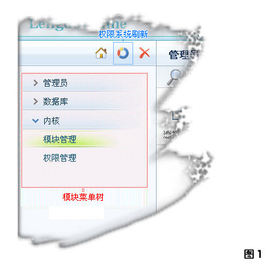
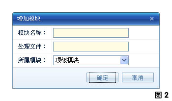

模块，作为权限系统中的重要组成部分，它不仅仅是权限操作的一个资源承载体，更是构建 用户资源接口--"模块菜单树" 的重要数据来源！
1. 模块菜单树

通过 "图1" 相信大家已经知道了什么是 "模块菜单树"！
那么我们如何改变 "模块菜单树" 呢？上面已经说过，模块是构建"模块菜单树"的重要数据来源，这就意味着改变模块数据就可以改变 "模块菜单树"！
以下操作将改变模块数据：增加模块，编辑模块，删除模块，隐藏模块，排序模块。
1.1 模块菜单树更新
由于权限系统的缓存机制，当我们改变模块或者权限时"模块菜单树"是不会马上自动更新的！这时我们可以点击 "图1" 中的 "权限系统刷新" 按钮来更新 "模块菜单树";
1.2 模块菜单树数据源
以下模块数据将被 "模块菜单树" 构建函数过滤：
1. 未添加模块操作的模块。(注：在"内核->权限管理"中无权限的模块)
2. 被隐藏的模块。(注：在"内核->模块管理"中不显示的模块)
2. 增加模块
按 "图1" 打开 "内核->模块管理" ，然后点击右上边的 "增加" 按钮打开增加模块的窗口(参见"图2")！

说明：
1. 模块的处理文件(夹)全部都在 /admin/modules/ 下。
2. 如果增加的是一个模块组，那么 "处理文件" 框中文件名将代表一个文件夹的名称。
3. 增加后的模块不能马上在 "模块菜单树" 中显示，原因参见 "
模块菜单树数据源
"。
例子：
1
模块名称：测试模块组
处理文件：testgroup
所属模块：顶级模块
说明：
根据左侧的数据我们需要在 /admin/modules/ 文件夹下建立名为 testgroup 的文件夹。
2
模块名称：测试模块
处理文件：test.php
所属模块：测试模块组
说明：
根据左侧的数据我们需要在 /admin/modules/testgroup/ 文件夹下建立名为 test.php 模块处理文件。
3. 编辑、删除、隐藏、排序模块
按 "图1" 打开 "内核->模块管理" 操作即可！
说明：操作完后执行 "
模块菜单树更新
" 操作即可看到效果！